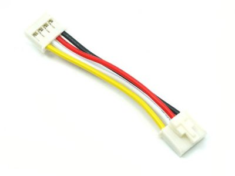

MaixAmigo
1. 概述
SIPEED MaixAmigo 可开发编程学习套件, MaixAmigo 在硬件上集成前后各 30W 像素摄像头、可扩展 TF 卡槽、用户按键、3.5‘TFT 寸显示屏、520mAh 锂电池、扬声器,麦克风、SPMOD,GROVE 扩展接口等。
软件上 MaixAmigo 默认搭载 MaixPy, 用户可以非常轻松的使用 MicroPython 语法快速进行人脸识别、物体分类等多种 AIoT 开发，同时还预留开发调试接口，也能将其作为一款功能强大的 AI 学习开发板。
2. MaixAmigo 外观及功能介绍
2.1. 外观一览


2.2. 板载硬件功能介绍
| 项目 | 说明 |
|---|---|
| CPU: | 双核 64bit RISC-V / 400MHz* (双精度FPU集成) |
| 内存: | 8MiB 64bit 片上 SRAM |
| 存储: | 16MiB Flash, 支持 micro SDXC 拓展存储 (最大128GB**) |
| 屏幕: | 3.5寸 TFT 显示屏, 分辨率: 320*480, 支持电容触摸(FT6X36) |
| 摄像头: | OV7740 (后摄)与GC0328(前摄) 各 30W 像素(最大分辨率 VGA:640*480) |
| 电池: | 板载可充电锂聚合物电池 (容量520mAh ) |
| 板载扬声器与麦克风 | 集成单音频控制器 ES8374 1W 8Ω 扬声器 |
| 板载接口: | USB-C *2 (K210 调试供电接口+兼容 STM32 核心板 USB 接口) Grove *3 & SPMOD*3 (可拓展模块) |
| 三轴加速度传感器: | MSA301 |
| 电池: | 520mAh 锂电池 |
2.3. 硬件板载扩展接口
MaixAmigo 对用户开放了两个高度扩展的接口: SP-MOD 与 Grove 接口, 用户可以很方便的进行 DIY
SP-MOD 接口
SP-MOD 即为 sipeed module, simplify PMOD, super module
| 接口 | 接口描述 |
|---|---|
| SP-MODE 接口描述 |  |
| 硬件接口(举例) |  |
MaixAmigo 板载了三个 SPMOD 接口
| PIN\NO. | SP-MOD1 | SP-MOD2 | SP-MOD3(游戏手柄) |
|---|---|---|---|
| 1 | GND | GND | GND |
| 2 | 12 | 29 | --- |
| 3 | 6 | 28 | --- |
| 4 | 24 | 22 | IO24 |
| 5 | 27 | 25 | IO27 |
| 6 | 10 | 30 | --- |
| 7 | 11 | 8 | --- |
| 8 | 3V3 | 3V3 | 3V3 |
Grove 接口
- Grove 模块接口
Grove 接口的线缆有 4 种颜色，用户可以根据颜色快速区别 
{kind=link}
| Pin | 颜色 | 描述 |
|---|---|---|
| 1 | 黄色 | (例如, I2C Grove Connectors 上的SCL) |
| 2 | 白色 | (例如, I2C Grove Connectors 上的SDA) |
| 3 | 红色 | VCC (所有的Grove接口红色都是VCC) |
| 4 | 黑色 | GND (所有的Grove接口黑色都是GND) |
MaixAmigo 板载了三个 GROVE 接口
| PIN | GROVE 1 | GROVE 2 | GROVE 3 |
|---|---|---|---|
| 1 | GND | GND | GND |
| 2 | 3V3 | 3V3 | 3V3 |
| 3 | IO5 | IO3 | IO1 |
| 4 | IO4 | IO2 | IO0 |
2.4. 板载 I2C 设备
MaixAmigo 板载 I2C 传感器/IC
| IC | 设备 id | I2C 地址(7位地址) | 配置：SCL: IO_24, SDA: IO_27 |
|---|---|---|---|
| --- | I2C Address | <<1 | MaixPy 读取地址 |
| ES8374 | 0x08 | 0x10 | D(16) |
| MSA301 | 0x13 | 0x26 | D(38) |
| AXP173 | 0x68 | 0x34 | D(52) |
3. 上手把玩
MaixAmigo 同样使用 MaixPy 入门 AIoT ，由于硬件特殊性，请在配置 amigo 硬件 后再使用 MaixPy 。
而在开发之前我们需要了解并准备相关工具，以减少我们后边因为准备不足而走的坑路
上手步骤:
- 下载需要的驱动，软件
- 开发板连接电脑，并安装 USB 驱动
- 更新最新固件
- 下载并打开最新的 MaixPy IDE
- MaixPy IDE 连接开发板 运行 MaixPy 示例程序
软硬件准备
硬件准备:
- 电脑一台
- MaixAmigo 开发板
- 可靠的 USB Type-C 数据线一条: 注意一定要可靠的数据线
软件准备:
- USB 驱动: FT2232 ->下载链接点这里
- Kflash_gui: https://dl.sipeed.com/MAIX/tools/kflash_gui
- MaixPy IDE : https://dl.sipeed.com/MAIX/MaixPy/ide/_/v0.2.5
- 例程程序库: https://github.com/sipeed/MaixPy_scripts
安装驱动
我们在拿到 Maix Amigo 并连接到电脑的时候，可以打开设备管理器查看串口驱动是否已经安装，打开设备管理器的方法有:
- 此电脑(右键) -> 属性 -> 设备管理器
- 开始菜单(右键) -> 设备管理器
控制面板 -> (搜索)设备管理器
当我们的系统是 Win10 系统，系统则会帮我们自动安装驱动，而如果是旧版 Win7，win8 系统我们就需要自己手动安装:

打开上一节的的链接下载驱动

- 点击安装

- 安装完成之后，可以在设备管理器看到已经识别到两个串口设备了

{kind=link}
3.1. 更新固件到最新版
用户拿到开发板之后，板载的固件默认或许已经不是最新版的，那么在使用过程中会存在或多或少的 bug， 我们这时候就需要更新固件版本到最新版本
更新方法查看: 更新固件
3.2. 运行第一个程序 Hello World
- LCD 实时预览 Camera
# -*- coding: UTF-8 -*-
import sensor, image, time, utime, lcd
from machine import I2C
from fpioa_manager import fm
from Maix import GPIO
'''
说明: 该例程为 Amigo 前后摄像头切换的 example.
注意事项: 由于 Amigo 电源管理电路的设计 需要配置 PMU AXP173 的输出电压, 才可以正常使用摄像头
'''
# -------------
try:
from machine import I2C
axp173 = I2C(I2C.I2C3, freq=100000, scl=24, sda=27)
axp173.writeto_mem(0x34, 0x27, 0x20, mem_size=8)
axp173.writeto_mem(0x34, 0x28, 0x0C, mem_size=8)
axp173.writeto_mem(0x34, 0x36, 0xCC, mem_size=8)
del axp173
except Exception as e:
print(e)
lcd.init(freq=20000000)
while True:
try:
sensor.reset(choice=1)
sensor.set_pixformat(sensor.YUV422)
sensor.set_framesize(sensor.QVGA)
sensor.skip_frames(time=2000)
for i in range(50):
img = sensor.snapshot()
lcd.display(img)
except Exception as e:
print(e)
try:
sensor.reset(choice=2)
sensor.set_pixformat(sensor.YUV422)
sensor.set_framesize(sensor.QVGA)
sensor.skip_frames(time=2000)
for i in range(50):
img = sensor.snapshot()
lcd.display(img)
except Exception as e:
print(e)